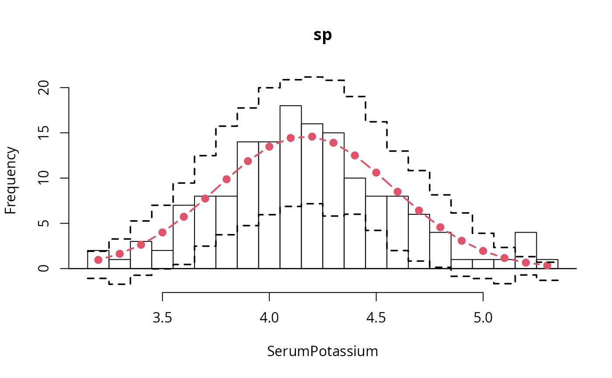
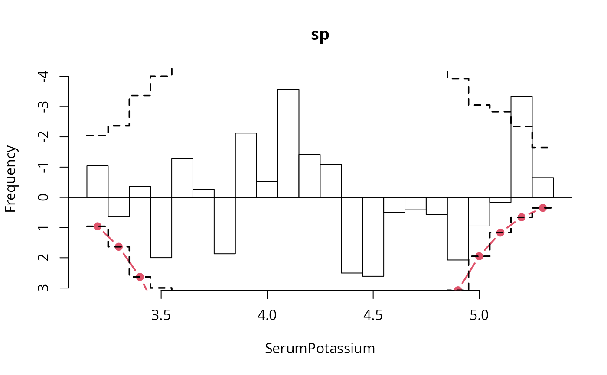
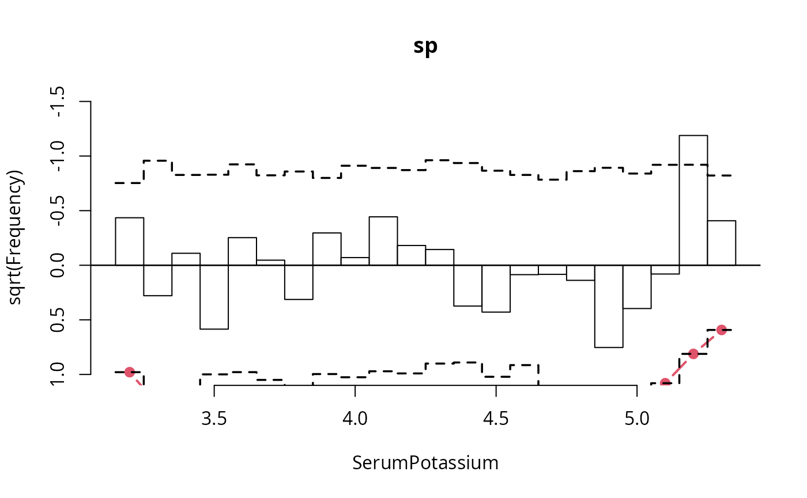
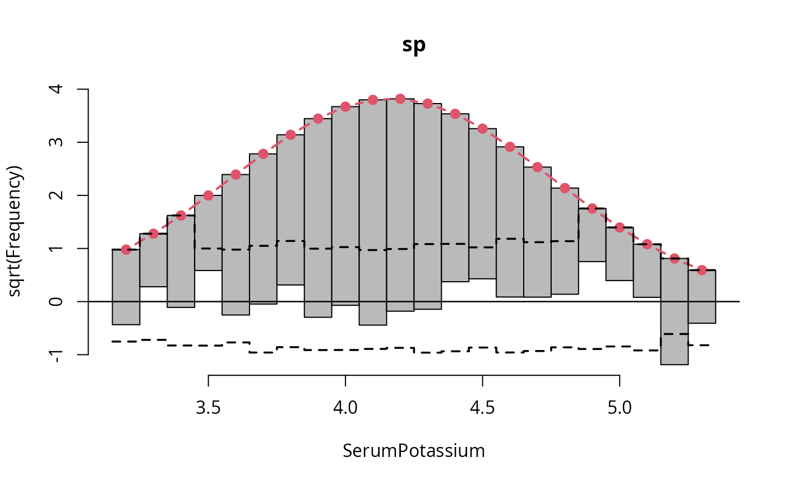

SerumPotassium.RdSample of 152 serum potassium levels.
data("SerumPotassium", package = "topmodels")A numeric vector of 152 serum potassium levels.
Page 350 in Rice (2007).
The data are taken from Rice (2007) who obtained the data from Martin, Gudzinowicz and Fanger (1975) and reports them rounded to one digit.
Rice JA (2007). Mathematical Statistics and Data Analysis, 3rd ed. Duxbury, Belmont, CA.
Martin HF, Gudzinowicz BJ, Fanger H (1975). Normal Values in Clinical Chemistry: A Guide to Statistical Analysis of Laboratory Data. Marcel Dekker, New York.
library("topmodels")
data("SerumPotassium", package = "topmodels")
## Figure 9.3a-c from Rice (2007), and actual hanging rootogram
## (note that Rice erroneously refers to suspended rootograms as hanging)
sp <- lm(SerumPotassium ~ 1)
br <- 32:54/10 - 0.05
rootogram(sp, scale = "raw", style = "standing",
breaks = br, col = "transparent")

rootogram(sp, scale = "raw", style = "suspended",
breaks = br, col = "transparent", ylim = c(2.8, -4))

rootogram(sp, scale = "sqrt", style = "suspended",
breaks = br, col = "transparent", ylim = c(1, -1.5))

rootogram(sp, breaks = br)
